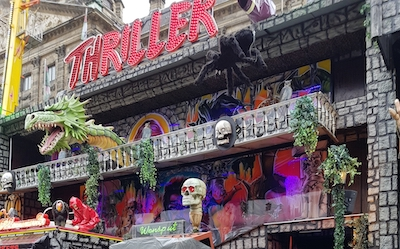

Activities
The Halloween Monsterball
Halloween Monsterball is the biggest Halloween party in Amsterdam. If you're a big Halloween autumnly fan who likes to get dressed as crazy as one possibly can, then you'll like this party. You can get dressed as whatever you want. All people must be dressed to attend this party.
€ 30 - 40,
Date: 31 October
from 22:00 - 06:00
Address: KLÖNNEPLEIN 4-6, 1014 DD AMSTERDAM
From Central station, you can travel with bus 21 to the stop Van Hallstraat. From there, it will be a three minute walk to the Klonneplein.